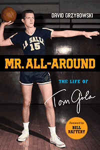

<body bgcolor="#FFFFFF" text="#000000" link="#0000FF" vlink="#CC0000" alink="#CC0000"><center><hr width="350" size="1" align="center" noshade>The first, definitive biography of La Salle basketball icon Tom Gola<hr width="350" size="1" align="center" noshade><p><a href="https://cdcshoppingcart.uchicago.edu/Cart/ChicagoBook.aspx?ISBN=&&PRESS=temple" target="_top">Buy this book!</a> | <a href="https://cdcshoppingcart.uchicago.edu/Cart/Cart.aspx?PRESS=temple" target="_top">View Cart</a> | <a href="https://cdcshoppingcart.uchicago.edu/Cart/Cart.aspx?PRESS=temple" target="_top">Check Out</a></p><p></p></center><!--none//--><h1 class = "booktitle">Mr. All-Around</h1> <h1 class = "subtitle">The Life of Tom Gola</h1>
<h3>David Grzybowski Foreword by Bill Raftery</h3>
<p class="info">cloth: $27.95, Nov 18<BR>EAN:&nbsp;978-1-4399-1679-7<BR><font color=#990033>Not Yet Published Preorder</FONT><font size=-7><br>&nbsp;</font></p><p class="info">e-book: $27.95, Nov 18<BR>EAN:&nbsp;978-1-4399-1681-0<BR><font color=#990033>Not Yet Published Preorder</FONT><font size=-7><br>&nbsp;</font></p></p></td></tr></table>
<BR> <p class="info">200 pp<BR> 6 x 9<BR> 30 halftones <p class="info"><font size=-7>&nbsp;</font></p><p class="info">
</P><BLOCKQUOTE></BLOCKQUOTE>
<p>Tom Gola is a Philadelphia Big Five basketball icon. He led La Salle to the NIT championship in 1952 and the NCAA championship in 1954, and holds the NCAA record for most rebounds in a career. Gola also helped the Philadelphia Warriors win the NBA championship as a rookie in 1956 and was named an All-Star five times before retiring in 1966. But Gola also had many amazing achievements as a coach; his La Salle Explorer teams were a large part of the national basketball landscape. He was inducted into the Naismith Memorial Basketball Hall of Fame in 1976.
<br/><br/>
In <i>Mr. All-Around, </i>avid sports fan and reporter David Grzybowski provides a definitive biography of Gola. He uses exclusive interviews he conducted with Gola in 2013 and features anecdotes by many figures of Philadelphia and basketball history, including John Cheney, Fran Dunphy, and Lionel Simmons.
<br/><br/>
After the NBA, Gola transitioned to a second career as a politician, serving as Pennsylvania State Representative and Philadelphia City Controller. His dedication to public service involved joining politician Arlen Specter on a campaign that revolutionized political marketing within Philadelphia.
<br/><br/>
<i>Mr. All-Around </i>is an affectionate testament to the life, career, and legacy of one of Philadelphia's most beloved sports legends.<br>
<P CLASS="top"><A HREF="#top">BACK TO TOP</A></P>&nbsp;
<BR>&nbsp;
&nbsp;<P>
</P><BR>&nbsp;
<H2 class="inpageheading"><A NAME="author bio"></a>About the Author(s)</H2><p><b>David Grzybowski</b> is a former television news reporter for WPHL in Philadelphia, where he covered the 2015 Papal Visit by Pope Francis, the annual Philadelphia Mummers parade, and the 2016 Democratic National Convention as well as the 2016 Villanova Wildcats NCAA championship run. He was also a reporter at WNCN in Raleigh, North Carolina, where he covered the 2017 University of North Carolina's NCAA championship title run, as well as Hurricane Matthew.<br>
<P CLASS="top"><A HREF="#top">BACK TO TOP</A></P>
<p><h2 class="inpageheading"><a name="subjects"></a>Subject Categories</h2> <p><a href="http://www.temple.edu/tempress/sports.html" target="_top">Sports</a> <br><a href="http://www.temple.edu/tempress/philly.html" target="_top">Philadelphia Region</a> <br><a href="http://www.temple.edu/tempress/political.html" target="_top">Political Science and Public Policy</a> <br><a href="http://www.temple.edu/tempress/biography.html" target="_top">Biography/Memoir/Autobiography</a> <br><a href="" target="_top"></a> </p>
</p>
<P>
</P>
<p align="center"><a href="https://cdcshoppingcart.uchicago.edu/Cart/ChicagoBook.aspx?ISBN=&&PRESS=temple" target="_top">Buy this book!</a> | <a href="https://cdcshoppingcart.uchicago.edu/Cart/Cart.aspx?PRESS=temple" target="_top">View Cart</a> | <a href="https://cdcshoppingcart.uchicago.edu/Cart/Cart.aspx?PRESS=temple" target="_top">Check Out</a></p><p><font face="Arial" size="1"><a href="copyright.html" onMouseOver="window.status='Web Copyright Policy';return true;" onMouseOut="window.status=''" title="Web Copyright Policy">&copy;</a> 2019 <a href="http://www.temple.edu" target="new" onMouseOver="window.status='Link to Temple University home page';return true;" onMouseOut="window.status=''" title="Link to Temple University home page">Temple University</a>. All Rights Reserved. http://www.temple.edu/tempress/titles/2517_reg.html</font></p>